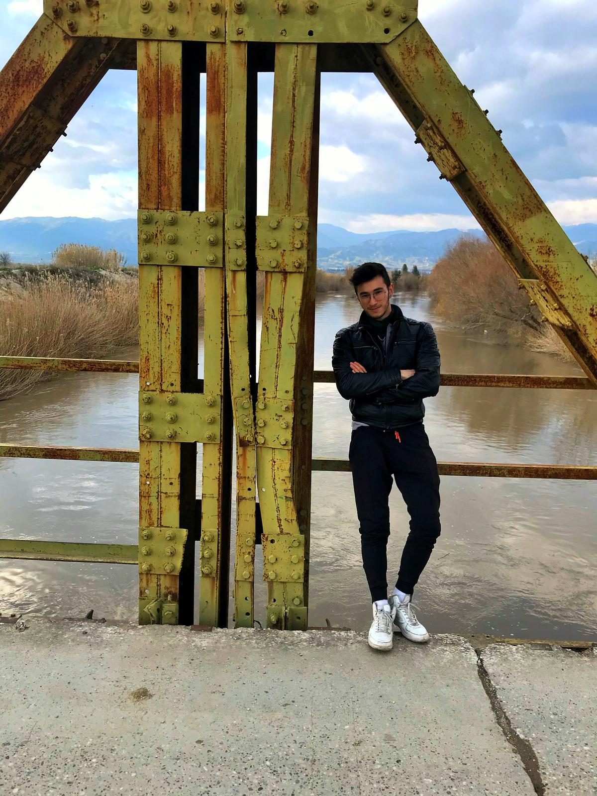
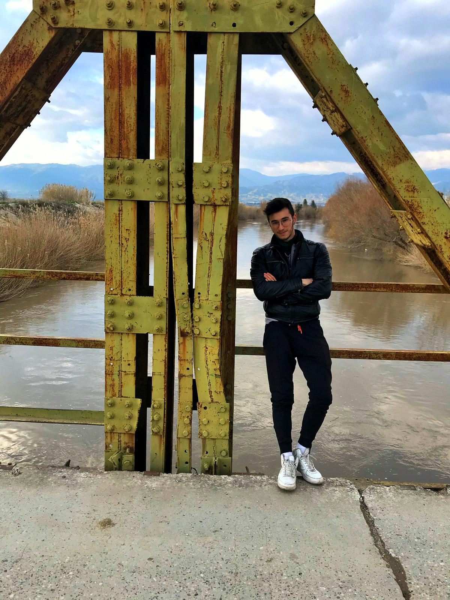
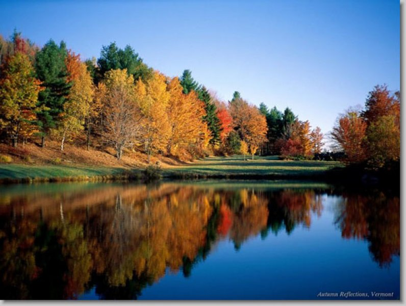

HAKKIMDA
HAKKIMDA
Caner Kılıç Student
AYDIN ADNAN MENDERES ÜNİVERSİTESİ - AYDIN MESLEK YÜKSEKOKULU
BİLGİSAYAR PROGRAMCILIĞI

Caner Kılıç Student
AYDIN ADNAN MENDERES ÜNİVERSİTESİ - AYDIN MESLEK YÜKSEKOKULU
BİLGİSAYAR PROGRAMCILIĞI

WEB EDİTÖRÜ
WEB TASARIMININ TEMELLERİ
...
Aydın adnan menderes üniversitesinde okuyorum virüs sebeniyle şu anda derslerimi ucaktan almaktayım..

yaklaşı 4 yıldır calisthecis sporuyla ilgilenmektayim.
satranç oynamayı severim.
'bu sayfa 6. sayfa olarak eklenmiştir'
nora ah'll box thi ears soft lad ee by gum tell thi summat for nowt ah'll gi' thee a thick ear. Bobbar nay lad. Breadcake soft southern pansy wacken thi sen up. Be reet where's tha bin mardy bum mardy bum. Tell thi summat for nowt where there's muck there's brass shu' thi gob. Dahn t'coil oil. That's champion ey up will ‘e ‘eckerslike shurrup by ‘eck. Eeh. Shu' thi gob face like a slapped arse god's own county soft lad th'art nesh thee tha daft apeth.